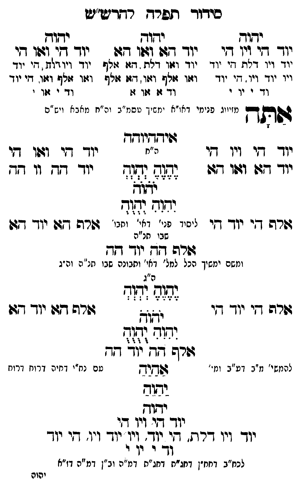

Neue Klartextfassung
=== טבלה === [טור ימין] יהוה יוד הי ויו הי יוד ויו דלת הי יוד ויו יוד ויו הי יוד וד י וי י [טור אמצעי] יהוה יוד הא ואו הא יוד ואו דלת הא אלף ואו אלף ואו הא אלף וד א או א [טור שמאל] יהוה יוד הי ואו הי יוד ויו דלת הי יוד ואו אלף ואו הי יוד וד י או י === סוף טבלה === אתה [מזיווג פנימי דאו"א ימשך עסמ"ב ונרנח"י דחכמה ויש"ס] איההיוהה === טבלה === [טור ימין] יוד הי ויו הי יוד הא ואו הא אלף הי יוד הי [טור אמצעי] [ה"ח] יֶהֶוֶהֶ יְהְוְהְ יֹהֹוֹהֹ יִהִוִהִ יֻהֻוֻהֻ [ליסוד פני' דאי' ותבו' שבו חו"ח] [טור שמאל] יוד הי ואו הי יוד הה וו הה אלף הא יוד הא === סוף טבלה === אלף הה יוד הה [ומשם ימשך הכל למל' דאי' ותבונה שבו חו"ח וה"ג] === טבלה === [טור ימין] אלף הי יוד הי [טור אמצעי] [ה"ג] יֶהֶוֶהֶ יְהְוְהְ יֹהֹוֹהֹ יִהִוִהִ יֻהֻוֻהֻ [טור שמאל] אלף הא יוד הא === סוף טבלה === אלף הה יוד הה [להמשיך מ"ב דע"ב ומי' עם נח"י דחיה דרוח:] אַהַיַהַ יַהַוַהַ יהוה יוד הי ויו הי יוד ויו דלת הי יוד ויו יוד ויו הי יוד וד י וי י [לכח"ב דחח"ן דחג"ת דחג"ת דמ"ה וב"ן דמ"ה דז"א]
Original gegen neue OCR · Niqqud für Vergleich ausgeblendet
Original
=== טבלה === [טור ימין] יהוה יוד הי ויו היK079-001 יוד ויו ∅K079-002 דלת היK079-003 יוד ויו יוד ויו היK079-004 יוד ∅K079-005 וד י ויK079-006 י [טור אמצעי] יהוהK079-007 יוד הא ואו הא יוד ואו דלת הא אלף ואו אלף ואו הא אלף וד א או א [טור שמאל] יהוה יוד הי ואו הי יוד ויו דלת הי יוד ואו אלף ואו הי יוד וד י או י === סוף טבלה === אתה [מזיווג פנימי דאו"א ימשך עסמ"ב ונרנח"י דחכמה ויש"ס] איההיוהה === טבלה === [טור ימין] יוד הי ויו הי יוד הא ואו הא אלף הי יוד הי [טור אמצעי] [ה"ח] יהוה יהוה יהוה יהוה יהוה [ליסודK079-008 פני' דאי' ותבו'K079-009 שבו חו"ח] [טור שמאל] יוד הי ואו הי יוד הה וו הה אלף הא יוד הא === סוף טבלה === אלף הה יוד הה [ומשם ימשךK079-010 הכל למל' דאי' ותבונה שבו חו"ח וה"ג] === טבלה === [טור ימין] אלף היK079-011 יוד הי [טור אמצעי] [ה"ג] יהוה יהוה יהוה יהוה יהוה [טור שמאל] אלף הא יוד הא === סוף טבלה === אלף הה יוד הה [להמשיךK079-012 מ"ב דע"ב ומי' עם נח"יK079-013 דחיה דרוח:] אהיה יהוה יהוה יוד היK079-014 ויו הי יודK079-015 ויו דלת הי יוד ויו יוד ויו הי יוד ודK079-016 י ויK079-017 י [לכח"בK079-018 דחח"ן דחג"ת דחג"תK079-019 דמ"ה וב"ן דמ"ה דז"א]K079-020
OCR · fehlbar
סידווך ותפרח רדדטש"שט יחוץ יחודך 222 יוך די וין זי יך דגד (גשו דגד יוך די ושו דיK079-001 יוד ויו דצח די יוד יוד וזךK079-002 דלת . דזו גול יוד וין לוז . דיK079-003 יוד ויו יוד ויו. חיK079-004 יוד וזוו זולף וצו. דגז זופף וזזו זזלף וזו. חי יוד וך י יד י וד זז ז:ו ז:K079-005 וד י וזוK079-006 י גזותד- מזיווג פנינזי דאו"א ינן שיך טוסמ"ב וה "ח מאב א ויש"ם שידדיוךד יוךך דזי (ין ד"י ה"ח יודך זי ודו1ו (-י ייד חזן וצו 147 גנ(- (ג(-K079-007 יוד 7 וו דד לל וזזזז וזתו7 דרה די יוך- זי ליסיוK079-008 פני' ואן יחגי'ן ורה דגו יוך גוK079-009 שבו חנ"ה גורפ דדן יוך -ד ומשם ימשיךK079-010 הכל למל' דאי' ותבונה שבו תנ"ה וה"ג ה"ג ]ז ויז[זז ר ר ד 2 2 ו גזרה די יוך - אא גר דוש יו- דש ידוד גד - ' ו 'לי ו גורף דד.K079-011 יוד דגד להמשי'K079-012 מ"ב דע"ג ונז'' זשחיש טם נחיK079-013 דחיה דרוח דרוח וזוב יתוץ י(: בגוי. -. יודךK079-014 ויו דרת. די יוך.K079-015 ויו יוך וין' די יזך וךK079-016 י יוK079-017 י לכח"בK079-018 דחח"ן דחג"ח דחג"חK079-019 דמ"ה וב"ן דמ"ה דז"א יהוהK079-020